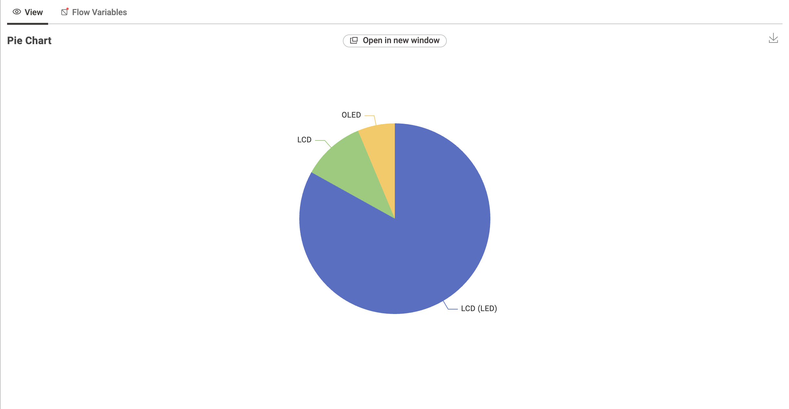
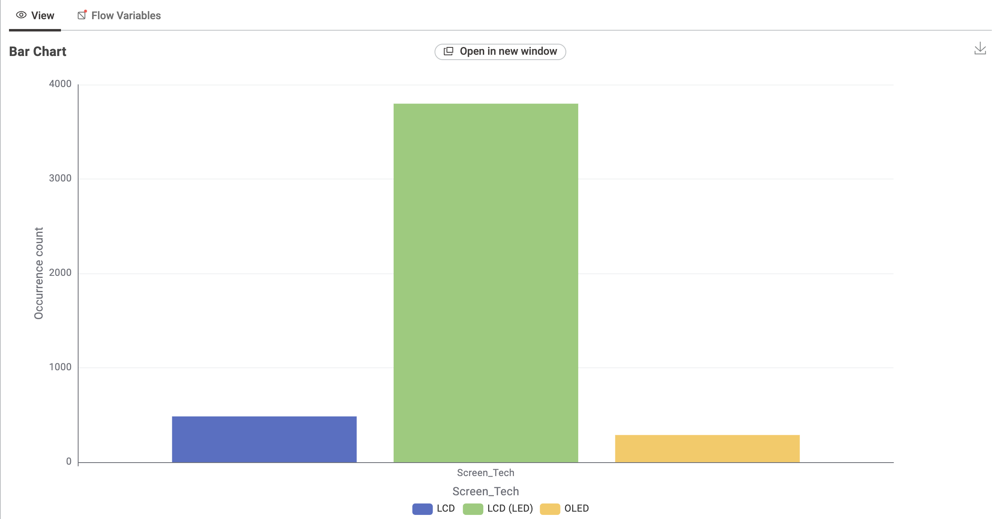
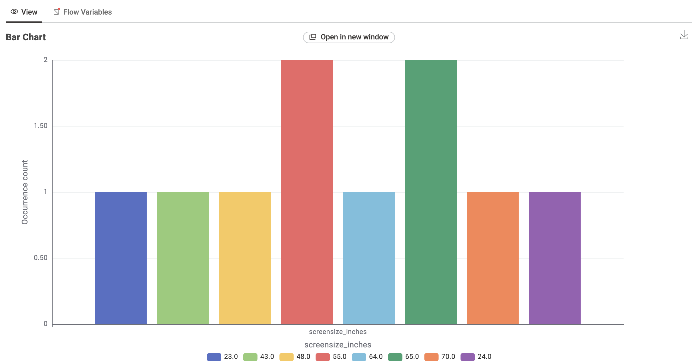
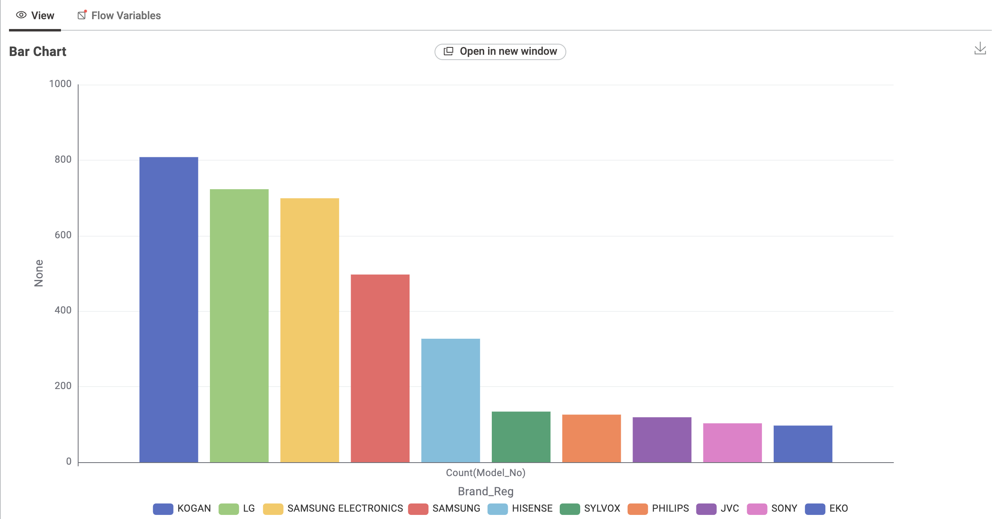
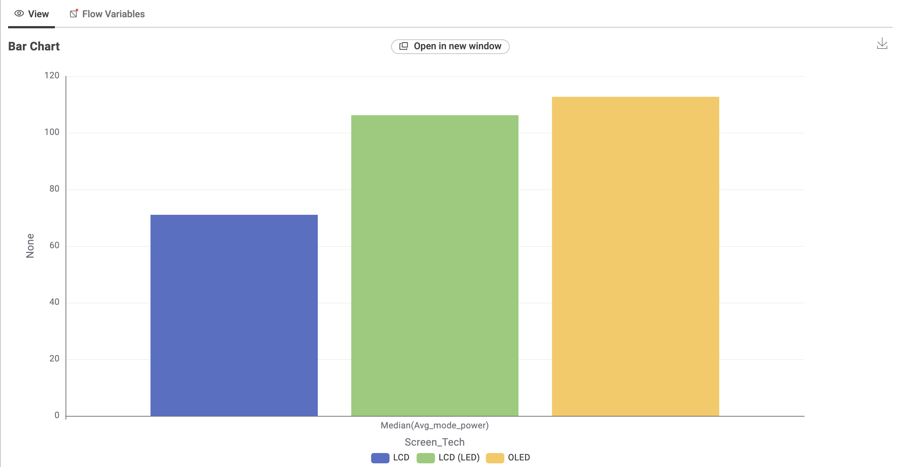
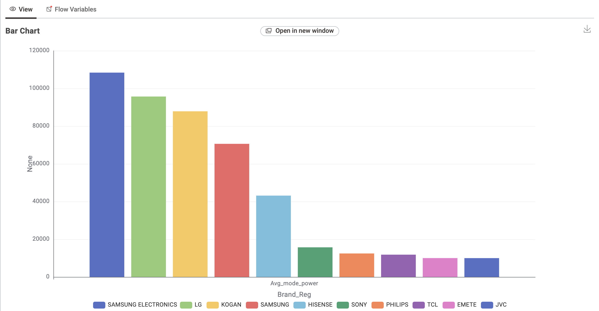

Brightness matters
Higher brightness can draw more power.
Appliance / 01
Compare screen size and estimated energy use with your viewing habits.
Illustrative figures only. Check current product labels.
| Television type | Typical size | Estimated annual use | Energy note |
|---|---|---|---|
| LED LCD | 55 inch | 120 kWh | Efficient baseline |
| LED LCD | 75 inch | 185 kWh | Good with mindful use |
| OLED | 65 inch | 210 kWh | Variable by content |
| Large format | 85 inch | 295 kWh | More screen, more demand |
What the dataset suggests
These charts describe the available models in this dataset. They are useful for spotting patterns, not a substitute for the energy label on an individual TV.






Higher brightness can draw more power.
Switching off at the wall can reduce idle use.
Larger panels usually use more energy.